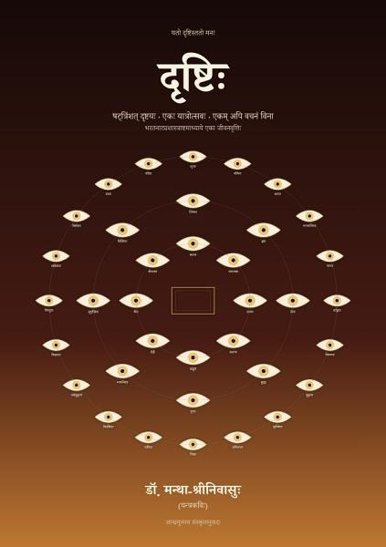

दृष्टिः
षट्त्रिंशत् दृष्टयः · एकः यात्रोत्सवः · एकम् अपि वचनं विना
Google PlayLibraryभरतः अष्टमे अध्याये षट्त्रिंशत् दृष्टीः अवदत् — अष्टभ्यः रसेभ्यः, अष्टभ्यः स्थायिभावेभ्यः, विंशतिभ्यः सञ्चारिभावेभ्यः; प्रतिदृष्टि पक्ष्म, तारा, भ्रूः किं कुर्यात् इति अलिखत्। इदं पुस्तकम् एकः यात्रोत्सवः, एकं दिनम् — मध्ये एकं नाट्यम्, परितः जनाः, परितः आपणाः। प्रथमाः अष्टौ दृष्टयः रङ्गे, पराः अष्टौ प्रेक्षकेषु, शेषाः विंशतिः उत्सवे सर्वत्र — रात्रिं यावत्।
अस्मिन् पुस्तके एकम् अपि वचनं नास्ति। न कोऽपि किमपि वदति; सर्वे पश्यन्ति। प्रतिदृष्टि भरतस्य रूपम् — नेत्रम् (नेत्रं किम् अकरोत्), दृश्यम् (किं दृष्टम्), दर्शनम् (सा दृष्टिः कमपि मिलिता न वा)। दृष्टिनाम काव्ये कुत्रापि नास्ति; भरतः एव नाम ददाति।
उत्सवे समाप्ते षट्त्रिंशत् नेत्राणि निमीलन्ति। एकं न निमीलति — सप्तत्रिंशी दृष्टिः, अनामिका, उपसंहारे।
प्रतिपङ्क्तिः द्वौ अर्धौ, मध्ये विरामः, युगलशः अन्त्यानुप्रासः — गद्यं न, श्वसत् पद्यम्। शास्त्रकाव्यमाला — नाट्यशास्त्रश्रेण्यां द्वितीयम् (सञ्चार्याः अनन्तरम्)। आन्ध्रमूलस्य अयं संस्कृतानुवादः; ग्रन्थान्ते दृष्टिकोशः।